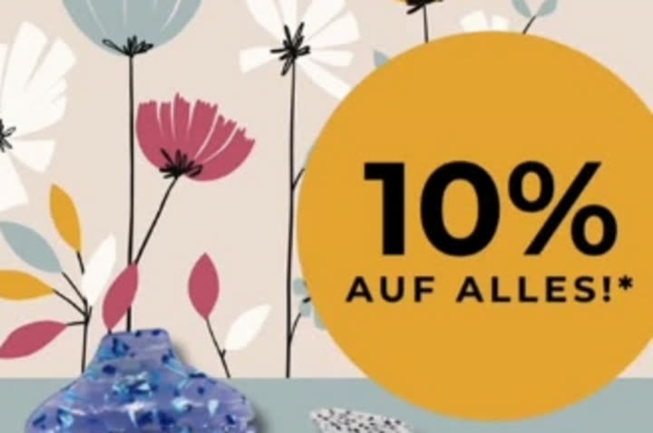

Gesehen werden
Dein Logo im Mitgliederverzeichnis, Vorstellung beim „Vorstell-Mittwoch“ auf Instagram, Präsenz bei allen Aktionen.

Wirtschaftsvereinigung Wertingen und Umgebung e.V.
Beliebt:
 Das Geschenk für Wertingen ↗
Schlossweihnacht in
–
Tagen · ab 04.12.2026 ↗
Für Unternehmen
7,50 €/Monat
Jetzt Mitglied werden ↗
Das Geschenk für Wertingen ↗
Schlossweihnacht in
–
Tagen · ab 04.12.2026 ↗
Für Unternehmen
7,50 €/Monat
Jetzt Mitglied werden ↗
95 Mitglieder, 8 Branchen. Tippe eine Branche an.
Vier Gründe, warum 95 Unternehmen dabei sind.
Dein Logo im Mitgliederverzeichnis, Vorstellung beim „Vorstell-Mittwoch“ auf Instagram, Präsenz bei allen Aktionen.
Als Annahmestelle für den Städtle-Scheck holst du Kundschaft ins Geschäft, die sonst online bestellt.

Weißwurst-Treffen, Weinpräsentation, kurze Wege zu Partnern, Kunden und Fachkräften im Ort.

Frühling im Städtle, Herbstmarkt, Schlossweihnacht, gemeinsame Rabattaktionen und eine Stimme gegenüber der Stadt.

@wv_wertingen · 496 Follower
04.–06. & 11.–13. Dezember 2026 · Schlossgarten am Pappenheimer Schloss · über 50 Aussteller
Acht Ehrenamtliche, gewählt 2025.
 Katja Killisperger1. Vorsitzende
Katja Killisperger1. Vorsitzende Alexander Bischof2. Vorsitzender
Alexander Bischof2. Vorsitzender Andreas KlimeschSchatzmeister
Andreas KlimeschSchatzmeister Hans MorawBeisitzer
Hans MorawBeisitzer Katharina HanelBeisitzerin
Katharina HanelBeisitzerin Florian StepanBeisitzer
Florian StepanBeisitzer Magdalena KeißBeisitzerin
Magdalena KeißBeisitzerin Stefan KrebsBeisitzer
Stefan KrebsBeisitzer